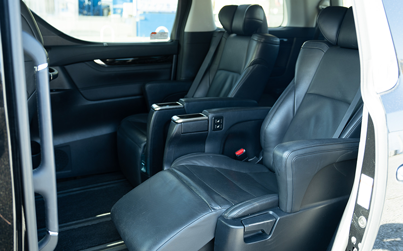

Japan Chauffeur Service for Travel Agents: The Complete 2026 Partner Guide
If you sell Japan, your clients expect more than a taxi at the curb. They expect a uniformed driver waiting at arrivals with their name on a printed sign, a spotless vehicle with bottled water, and a route that gets them to The Aman or The Peninsula on time even if their flight slipped two hours. Sourcing that experience reliably — for client after client, prefecture after prefecture — is the quiet part of a luxury Japan program that makes or breaks repeat bookings.
For travel agents · DMCs · concierge desks10 min read
This guide is written for travel agents, DMCs, tour operators, and concierge desks who want a working understanding of how Japan chauffeur service actually operates, what to look for in a B2B partner, and how to price and present private transport to high-end clients in 2026.
Why private chauffeur service is the quiet hero of a Japan program
Japan has the world's most reliable trains. So why book a chauffeur at all?
The honest answer is that the trains are reliable for confident, mobile travelers traveling light. Most luxury clients are neither. They are arriving from a 12-hour flight with four suitcases, two carry-ons, a stroller, and a four-year-old. They are couples celebrating a 40th anniversary who do not want to negotiate the JR ticket gate at Shinagawa on day one. They are executives whose entire perception of "Japan" will be shaped by the 90 minutes between Haneda and the hotel lobby. A private chauffeur removes friction at exactly the moments when friction matters most.
For travel agents, this also means transport stops being a complaint generator. Missed trains, taxi queues at Kyoto Station, and rideshare apps that don't work without a Japanese phone number are common reasons clients call you from the road. None of that happens when a chauffeur is waiting.
What "chauffeur service" actually includes in Japan
The word "limo" gets used loosely. In Japan, a serious chauffeur operator offers a tightly defined product:
A uniformed, vetted driver who is licensed for hire (a green-plate vehicle, not a private white-plate car illegally operating as a taxi). A late-model vehicle — typically a Toyota Alphard or Toyota Granace for couples and small families, a Toyota Alphard or Toyota HiAce for groups of up to six with luggage, and a HiAce Grand Cabin or mini-coach for larger parties.
Meet-and-greet at arrivals with a printed name sign, including a flight-tracking guarantee so the driver is there even when the flight is early or late. Bilingual support — typically an English-speaking driver, or a Japanese-speaking driver with a dedicated English-speaking dispatcher reachable by phone or WhatsApp. Itinerary flexibility — by-the-hour charter, point-to-point transfer, or multi-day touring with the same driver and vehicle.
What it is not: a regular taxi booked through an app. The difference matters for pricing predictability (fixed charter rates instead of a running meter during waits), guaranteed vehicle quality, and the premium client experience.
The B2B partnership models, briefly
Most travel agents work with Japan chauffeur operators under one of three models. Pick the partner whose model matches how you want to sell.
Net rate + agent markup. The operator quotes you a net (wholesale) rate and you mark it up to your client. This gives agents the most pricing control and is the standard for luxury operators selling FIT programs. Margins typically sit between 15% and 25%.
Commission model. The operator publishes a public retail rate and pays you a commission (often 10–15%) on confirmed bookings. Easier for one-off bookings; less attractive at scale because the client sees the same price they would see direct.
Retainer / dedicated allocation. For agencies doing high volume — say, more than 30 vehicle-days per month in Japan — some operators will pre-allocate vehicles and drivers, with priority confirmation and a small monthly retainer. This is how the strongest DMCs and luxury hotel concierges operate during cherry blossom and autumn peaks.
For most growing programs, the net-rate model is the right starting point. It is transparent, easy to invoice, and lets you bundle transport into a package without exposing the supplier.
How to vet a Japan chauffeur partner
Anyone can put a website up and claim to run "luxury Japan transport." The questions below quickly separate operators with real fleets and real drivers from resellers passing your booking down a chain of subcontractors.
1.Ask to see the operator's license number (the ippan jōyō ryokaku jidōsha unsō jigyō permit, often abbreviated 一般乗用旅客自動車運送事業 on Japanese government documents). Legitimate operators publish it; resellers cannot.
2.Ask who actually owns the vehicles — operators with their own fleet have consistent presentation; brokers send whatever happens to be available, which is why your client gets a tired Alphard with a stale air freshener on day one and a sparkling new Granace on day three.
3.Ask for driver tenure and English assessment — how long is the average driver on staff, and how is English ability evaluated and graded internally? Operators that can't answer this are guessing.
4.Ask about flight tracking and delay policy — what happens if the client's flight is 4 hours late, and is there an extra charge?
5.Ask about insurance coverage — passenger liability minimums and proof of commercial coverage.
6.Ask how they handle luggage limits in the Alphard vs. Granace — a partner who has clearly thought through "2 adults + 2 large hard-shells + 2 carry-ons + stroller = which vehicle" is a partner who has handled real luxury clients.
Do a test booking on your own account before you ever sell it to a client. One quiet airport transfer tells you more than a hundred slides in a sales deck.
Fleet basics: matching the vehicle to the client
Vehicle choice is half the product. The defaults to internalize:
The Toyota Alphard Executive Lounge is the workhorse of Japanese chauffeur service — sliding doors, captain's chairs in the second row, surprisingly generous luggage space behind the third row. Two adults plus two large suitcases is comfortable; two adults plus a child plus three suitcases is still fine.
The Toyota Granace is the step-up for ultimate luxury: offering massive luggage space paired with an executive, hotel-suite finish inside. Specify it for VIP business hosting, elder family members, or high-end golf trips where premium space is a priority.
For groups of seven or more, move to a HiAce Grand Cabin (9–10 passengers, more austere) or a small coach.

Pricing your Japan chauffeur product
Indicative 2026 net rates (you'll quote higher to your client; these are wholesale ranges from established Tokyo operators):
Half-day charter (4 hours, within Tokyo 23 wards), Alphard: ¥45,000–¥60,000
Full-day charter (8 hours, within Greater Tokyo), Alphard: ¥75,000–¥95,000
Haneda ↔ central Tokyo transfer, Alphard: ¥22,000–¥30,000
Narita ↔ central Tokyo transfer, Alphard: ¥38,000–¥55,000
Tokyo → Kyoto one-way (highway tolls included), Alphard: ¥160,000–¥200,000
English-speaking driver upgrade: typically a 10–15% premium where available
Two pricing notes that will save you angry emails: overtime is real (typically billed in 30-minute increments once a charter runs past contracted hours), and highway tolls and parking are usually passed through at cost rather than included. Build both into your client quote so the final invoice doesn't surprise anyone.
What to put on your own quote to the client
A clean client-facing quote includes the vehicle model, maximum passenger and luggage capacity, included hours, driver language, meet-and-greet details, and what is excluded (parking inside ryokan grounds, entry fees the driver pays on behalf of the client, expressway tolls beyond the standard route). Make exclusions explicit. Luxury clients accept extras; they hate surprises.
Where you have it, include a photo of a representative vehicle interior and the line "driver and vehicle confirmed 48 hours before arrival, with name and mobile contact." This single sentence does more for conversion than any amount of brand copy.
The conversations that close partnerships
When you reach out to a Japan chauffeur operator as a potential partner, the first email that gets taken seriously usually includes three things: a one-line description of your agency (where you're based, what segment of clients you serve), an estimate of monthly vehicle-days you expect to book in Japan during a typical and a peak month, and a request for a specific sample quote — not "send me your rate sheet," but "what would a 7-day Tokyo–Hakone–Kyoto program with a Toyota Granace and English-speaking driver look like for 2 adults arriving HND on November 12?"
Vendors quote that email accurately within 24 hours. They send a sales template to "please share your destinations of interest" emails. You can tell the difference, and so can they.
Frequently asked questions
Do Japan chauffeur operators offer English-speaking drivers as standard?
No. Truly bilingual drivers are a minority of the workforce — most operators have 10–25% of their fleet covered by English-confident drivers. Always request English-speaking explicitly at the time of booking, and expect a small surcharge or limited availability during cherry blossom and koyo (autumn foliage) peaks.
Can the same chauffeur stay with our client across multiple cities?
Yes. Multi-day "same driver, same vehicle" charters are common, including overnight stays in Hakone, Kyoto, or Kanazawa. The operator covers the driver's accommodation and per diem, billed through to you at a published rate (typically ¥15,000–¥25,000 per overnight).
Is private chauffeur faster than the shinkansen for Tokyo–Kyoto?
No — the shinkansen is faster by roughly an hour door-to-door. Private chauffeur wins on door-to-door comfort, luggage handling, mid-route stops (Hakone, Nagoya), and the ability to start or end at addresses far from a major station. For pure transit, sell the train. For experience, sell the car.
How far in advance should we book?
For standard dates, 2–3 weeks is comfortable. For cherry blossom (late March through mid-April) and autumn foliage (mid-November through early December), book a minimum of 6–8 weeks out for the Granace and larger group vehicles, longer for popular Friday and Saturday slots.
What's the cancellation policy travel agents should expect?
Industry standard is free cancellation up to 72 hours before pickup, 50% within 72 hours, 100% within 24 hours, with longer windows during peak season. Build matching terms into your own client agreements so you are never absorbing supplier penalties personally.
About us
ASOBI Co., Ltd.
A Japan-based, licensed private chauffeur operator. We work directly with travel agents, DMCs, and luxury concierge desks — own team, own fleet, no subcontracting. All drivers hold the Japanese Class-2 operating license with mandatory physical and psychological screening.
Become a partner
Run one trial booking on us.
We'd rather have you experience the product than read another deck. Tell us about an upcoming Japan program and we'll come back with a confirmed quote within one business day.